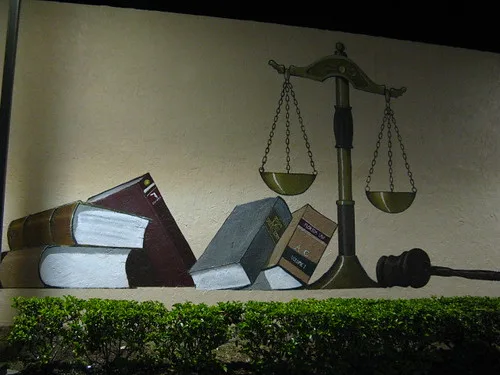

최태원, '노소영에 9440억 지급' 불복…재산분할 재상고
최태원 SK그룹 회장 측이 노소영 아트센터 나비 관장에게 재산분할금 9440억원을 지급하라는 서울고법 파기환송심 판결에 불복해 대법원에 재상고했다. 최 회장 측은 14일 오후 11시59분경 법원에 상고장을 제출한 것으로 확인됐다. 이로써 2017년 최 회장의 이혼 조정 신청으로 시작된 이번 소송은 다시 한번 대법원의 판단을 받게 됐다.
앞서 서울고법 가사1부는 지난달 24일 파기환송심에서 최 회장이 노 관장에게 재산분할금 9440억원과 판결 확정 다음 날부터 지급일까지 연 5%의 이자를 지급하라고 선고했다. 9440억원 기준으로 계산하면 지연이자는 연간 약 472억원, 하루 기준으로는 약 1억3000만원에 달하는 규모다. 이번 재상고로 판결 확정이 다시 미뤄지면서 지연이자 부담도 함께 이어지게 됐다.

이번 소송은 한국 이혼 재산분할 사건 중 역대 최고액 규모로 꼽힌다. 2022년 12월 1심은 혼인 파탄의 책임이 주로 최 회장에게 있다고 보고 노 관장의 이혼 청구를 받아들이면서, 위자료 1억원과 재산분할로 현금 665억원을 지급하라고 판결했다. 그러나 2024년 5월 2심은 위자료를 20억원으로, 재산분할액은 1조3808억원으로 대폭 늘리며 당시 역대 최고액 판결을 내놨다. 2심 재판부는 노 관장의 부친인 노태우 전 대통령이 1991년경 최종현 SK그룹 선대회장에게 건넨 300억원이 SK그룹 재산 형성에 기여했다고 보고 이를 재산분할 계산에 반영한 것으로 알려졌다.
하지만 대법원은 2024년 10월 이 300억원이 노 전 대통령이 재임 중 조성한 뇌물 성격의 자금으로 보이는 만큼, 설령 그 돈이 SK그룹으로 흘러들어 갔다 하더라도 재산분할 기여도 계산에 포함할 수 없다고 판단해 사건을 서울고법으로 돌려보냈다. 이후 진행된 파기환송심에서 재산분할액이 1조3808억원에서 9440억원으로 다시 조정된 것이 이번 판결의 배경이다.

최 회장 측은 상고장 제출과 관련해 "여러 사정을 고려해 고심 끝에 상고장을 제출했다"며 "주주들과 그룹 경영에 대한 부정적 영향을 최소화하겠다는 자세로 향후 절차에 임하겠다"고 밝혔다. 9440억원이라는 액수 자체가 SK그룹 지배구조나 경영권에 상당한 부담으로 작용할 수 있다는 관측이 나오는 가운데, 최 회장 측이 판결 확정 시점을 늦추면서 대응 방안을 모색할 시간을 확보하려는 것으로 풀이된다. 특히 이 재산분할금을 마련하는 과정에서 최 회장이 보유한 SK그룹 계열사 지분을 어떤 방식으로 처분하거나 담보로 활용할지가 향후 그룹 지배구조 재편의 변수로 거론된다.
법조계에서는 대법원이 앞서 파기환송 취지에서 핵심 쟁점인 300억원의 성격을 명확히 판단한 바 있는 만큼, 이번 재상고심에서 재산분할액 자체가 다시 크게 바뀌기는 쉽지 않을 것이라는 전망도 나온다. 다만 이자 지급 기산일이나 세부 재산 평가 방식 등을 둘러싼 다툼의 여지는 남아있어, 대법원이 이를 어떻게 정리할지가 관건이 될 것으로 보인다. 이번 소송은 2017년 시작된 이후 만 9년째 이어지고 있으며, 재상고심 결론이 나오기까지 상당한 시일이 더 소요될 것으로 예상된다.